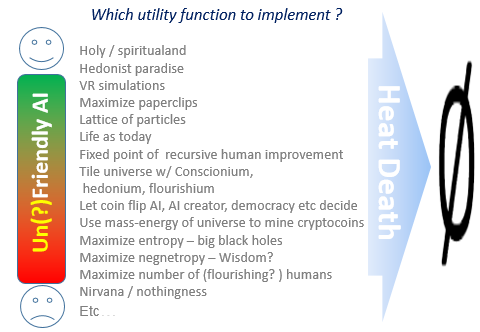

Consciousness
There is much discussion if science is powerful enough to solve the Mystery of Consciousnes (R). How can physical stuff like the human brain fells like to be something?
Maybe the best approach SynthCons is to build a system that also asks: "Is the red that I see tha same that you see? I cannot describe it". By inspecting why it says that we can learn more about what causes the innefable feeling of qualia.
Value alignment
There are reasons for optimism. One reason is, there is a massive amount of data. Because remember — I said they’re going to read everything the human race has ever written. Most of what we write about is human beings doing things and other people getting upset about it. So there’s a massive amount of data to learn from.Stuart Russell
There is no reason that the kludgey human brain and it’s mess of preferences should lead to some simple reflective equilibrium- Stuart Armstrong
Mathematical patterns of consciousness
Studying Consciousness/Qualia (SynthCons), “what is like to be a bat” by simulating the bat.We can ask: if consciousness is reducible to computation, then what kinds of computation suffice to bring about consciousness? What if each person on earth simulated one neuron in your brain, communicating by passing little slips of paper around? Does it matter if they do it really fast?
Or what if we built a gigantic lookup table that hard-coded your responses in every possible interaction of at most, say, 5 minutes? Would that bring about your consciousness? Does it matter that such a lookup table couldn’t fit in the observable universe? Would it matter if anyone actually consulted the table, or could it just sit there, silently effecting your consciousness? For what matter, what difference does it make if the lookup table physically exists— why isn’t its abstract mathematical existence enough? (Of course, all the way at the bottom of this slippery slope is Max Tegmark, ready to welcome you to his mathematical multiverse!)
Scott Aaronson - The Ghost in the Quantum Turing Machine
"Given that I am asking this question, what kind of (mathematical) structure probably I am?"
I would like to say that I really enjoy Max Tegmark’s general frame of you leaving this mathematical universe. One re-frame of what we were just talking about in these terms are there are patterns which have to do with identity and have to do with valence and have to do with many other things. The grand goal is to understand what makes a pattern good or bad and optimize our light cone for those sorts of patterns. - futureoflife.org

Our Mathematical Universe - Max Tegmark
About maximizing goodness
"Optimize our light cone" equals ( for many-worlds interpretation of quantum mechanics) optimize the weight of good-outcome wavefunction branches. But - if the Schrödinger equation is deterministic - do we have choice / free-will at all? And do all things happen (with infinitesimal probability) anyway?
Philosophical musings and ultimate goals
If we could choose what we are and want, what should we choose?
To posit that our cerebral cortexes can know all possible emotional and intellectual experiences would seem preposterous (see Oxford’s Nick Bostrom explain the further experiences humanity might attain in his famous 2005 TED talk). (...) Apes don’t seem remotely capable of grasping human poetry, humor, politics, or morality – what are the future possibilities of intelligent sentience that we cannot presently imagine? It seems plausible that there are thousands of senses outside the petty five that humans now have access to (io9 – limitations of human sensory perception), and an “enhanced” entity might experience them all. It seems likely that a sentience (either man-made or built from an enhanced human mind) a thousand times more powerful than that of humans would conceive of moral dictates and understand the world in ways far beyond anything that present mortals could imagine. Such an entity would grasp meagre notions of “beauty” or “relationship” or “happiness” at such different and potentially deeper levels than we can presently fathom that it is hardly worth prognosticating. https://danfaggella.com
Now, why is that a good thing to do? Well, we know already that in this little human circle there, there are these enormously wonderful and worthwhile modes of being -- human life at its best is wonderful. We have no reason to believe that within this much, much larger space there would not also be extremely worthwhile modes of being, perhaps ones that would be way beyond our wildest ability even to imagine or dream about. And so, to fix this third problem, I think we need -- slowly, carefully, with ethical wisdom and constraint -- develop the means that enable us to go out in this larger space and explore it and find the great values that might hide there. nick_bostrom TED 2015
-
Put in another way, our morality evolved in our hunter-gatherer past, and most of configurations of particles that we can put the universe into are conpletely alien to us.
Problem: how to order the posssible states/histories (of the particles) of the universe from "best" to "worst".
-
And about what we should choose:It is important to remember that, according to evolutionary psychology, the only reason that we humans have any preferences at all is because we are the solution to an evolutionary optmization problem ( Max Tegmark)
Let`s use artificial social agents to help investigate the space of possible computations and find worthwile modes of being.

What goals should we put in a hypothetical future Artificial Super Intelligence?